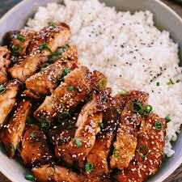

Home
This is the home section of the webpage. It cotains the differnt kinds of food recipes to cook.
How to cook Chicken fry
Cooking chicken fry can be a delicious and straightforward process. Here’s a step-by-step guide to making crispy, flavorful chicken fry:
Ingredients
- Chicken: 1 kg (preferably bone-in pieces like thighs or drumsticks)-Buttermil: 1 cup (optional, for marinating)
- Flour: 1 cup
- Cornstarch: 1/2 cup
- Eggs : 2, beaten
- Breadcrumbs: 1 cup (optional, for extra crunch)
-
Spices:
- 1 tablespoon paprika- 1 teaspoon garlic powder
- 1 teaspoon onion powder
- 1 teaspoon dried thyme or oregano
- 1 teaspoon cayenne pepper (optional, for heat)
- Salt and pepper to taste
Oil: For frying (vegetable oil or canola oil works well)
Lemon juice: 1 tablespoon (optional, for flavor)
Garlic cloves: 2, minced (optional, for extra flavor)
Equipment
- Large mixing bowls - Frying pan or deep fryer - Tongs or a slotted spoon - Paper towels - Cooling rack (optional) InstructionsPrepare the Chicken
1. Clean and Cut: Rinse the chicken pieces under cold water and pat them dry with paper towels. Cut them into bite-sized pieces if you prefer smaller pieces.2. Marinate (Optional): For extra tenderness and flavor, marinate the chicken in buttermilk mixed with a tablespoon of lemon juice for at least 1 hour or overnight in the refrigerator. This helps tenderize the chicken and adds flavor.
2.Prepare the Breading Station
1.Mix Flour and Spices: In a large bowl, combine the flour, cornstarch, paprika, garlic powder, onion powder, thyme (or oregano), cayenne pepper, salt, and pepper. Mix well.2. Beat Eggs: In a separate bowl, beat the eggs. 3. Prepare Breadcrumbs (Optional): If using breadcrumbs, place them in a third bowl.
3. Coat the Chicken
1. Dredge in Flour Mixture: Take each piece of chicken and dredge it in the flour mixture, coating it evenly. Shake off any excess.2. Dip in Eggs: Dip the floured chicken piece into the beaten eggs, allowing any excess to drip off.
3. Coat with Breadcrumbs (Optional): If using breadcrumbs, coat the chicken pieces with breadcrumbs after the egg dip for extra crunch.
4. Rest: Place the coated chicken pieces on a plate or tray and let them rest for about 10-15 minutes. This helps the coating adhere better during frying.
4.Heat the Oil
1. Heat Oil: In a large frying pan or deep fryer, heat enough oil to submerge the chicken pieces (about 1-2 inches of oil). Heat the oil to 350°F (175°C). You can use a kitchen thermometer to check the temperature.2. Test Oil: Drop a small piece of the flour mixture into the oil. If it bubbles and rises to the surface, the oil is ready.
5. Fry the Chicken
1. Fry in Batches: Carefully place the chicken pieces into the hot oil, being careful not to overcrowd the pan. Fry in batches if necessary.2. Cook Until Golden: Fry the chicken pieces for about 8-10 minutes, turning occasionally, until they are golden brown and cooked through. The internal temperature should reach 165°F (74°C).
3. Drain: Use tongs or a slotted spoon to remove the chicken pieces from the oil and place them on a plate lined with paper towels or a cooling rack to drain excess oil.
6. Serve
1. Season: While the chicken is still hot, you can season it with a little more salt or your favorite seasoning.2. Serve Hot: Serve the chicken fry hot with your favorite sides such as mashed potatoes, coleslaw, or a dipping sauce.
Enjoy your crispy and flavorful chicken fry!
About Us
Learn more about us in this section. We provide information about our mission and values.
Our Services
Discover the services we offer. We have a variety of options to cook different items.
Contact Us
Get in touch with us through this section. We provide contact details and a contact form.